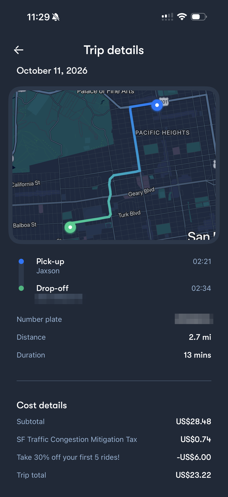

Review 3 of 3 · Sunday, October 11, 2026Waymo
Waymo is the one with no driver. I complained a lot about people losing their personality, and then I paid $23.22 for a ride with none at all.
The trip
My one Waymo trip was on Sunday, October 11: 2.7 miles, 13 minutes, picked up on the north side of the city and dropped off at home.
The receipt
The receipt shows a $28.48 subtotal, a $0.74 San Francisco traffic congestion tax, and a $6.00 discount for 30% off my first five rides. After all that, I paid $23.22. Without the discount it would have been $29.22.
How it compares
On cost, that makes Waymo the most expensive ride in this blog by a wide margin. My most expensive Uber was $15.80, so Waymo cost me $7.42 more. These weren’t the same trips, so it isn’t a perfect comparison, but $7.42 is still $7.42.
Next time
There’s no tip option, which is nice. The discount also only covers my first five rides, so if the route and the demand stay the same, I’d expect the next one to cost closer to $29.